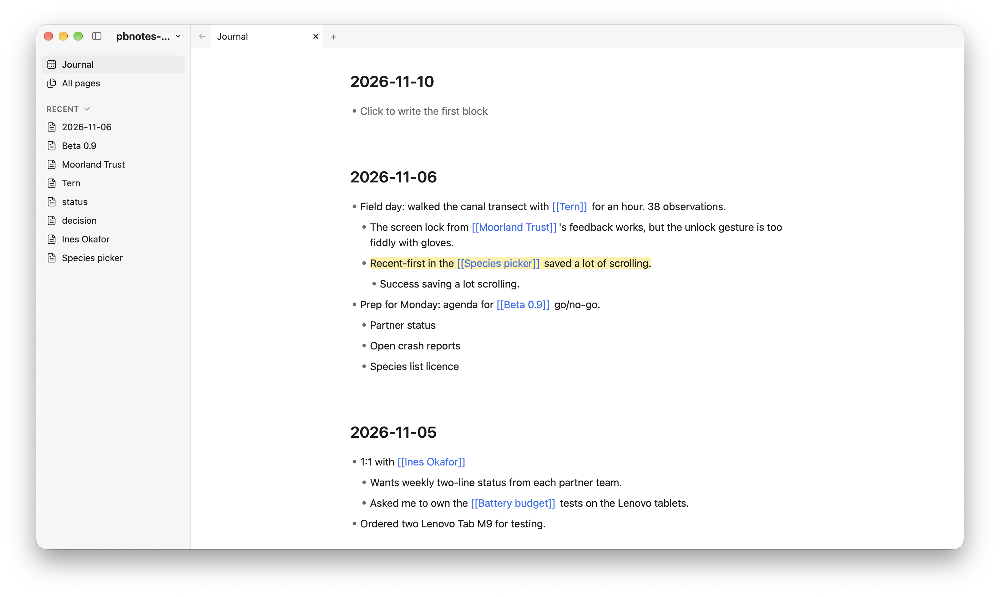
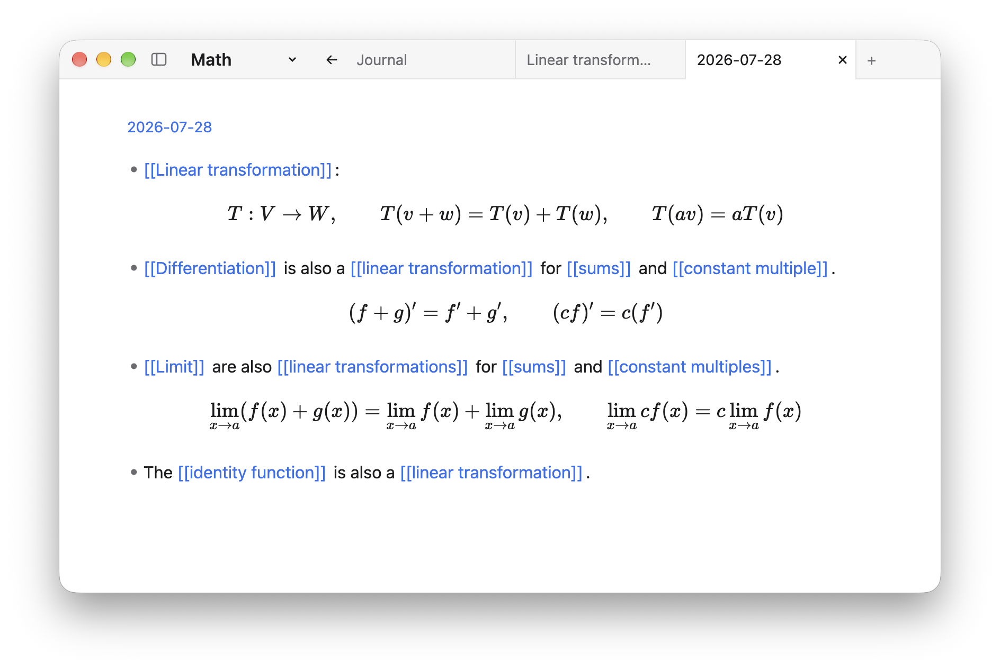
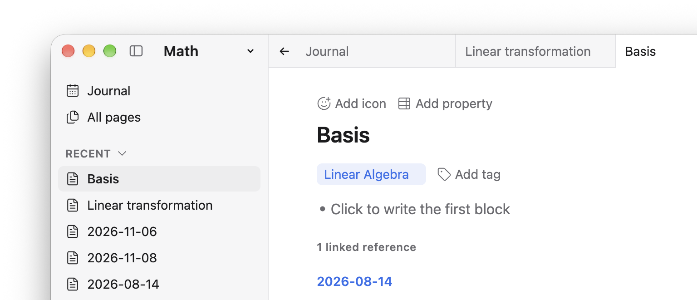

Don't write to communicate.
Write to understand.
Pb Notes is a notebook made of blocks. Jot the idea down, link it to a theme, and keep going. The structure shows up on its own.
Download Pb NotesPb Notes is early. Follow along:

Thinking on paper, like algebra.
You could solve an equation in your head in one big swoop. It's faster to push symbols around on paper, one step at a time. Ideas work the same way.
Write a paragraph, and the bad ideas fall apart while the good ones firm up. Most of those paragraphs are small: a block here, a block there. Over time they share themes. In Pb Notes, a theme is just a page, and tagging a block with it is just a link.
Pages are just ideas.
Link first
Type [[Linear transformation]] and keep writing. The page exists now. You don't need to create it, file it, or fill it in. Come back to it whenever you like.

Backlinks
Open a page and you'll see every block that links to it. Tags and properties are pages too, so they work the same way.

What's inside
- Daily journalOpen the app and today's page is waiting.
- Everything is a blockPages hold blocks. Blocks hold blocks.
- Block referencesBlocks can point at other blocks, or at pages.
- BacklinksEvery page lists everything that links to it.
- Tags are pagesSo are properties. One idea, one place.
- TabsKeep several pages open, like a browser.
- Sidebar previewPeek at a page on the right without losing your place.
Built on a ledger
Under the hood, Pb Notes stores every edit as an entry in a ledger, not as a rewritten file. Two edits to the same page at the same time almost never conflict.
Compare that to Markdown files, where two writers to one page means a merge conflict, or Logseq's single SQLite database for the whole graph.